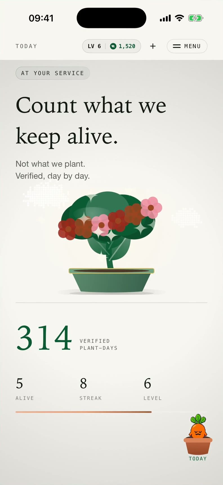
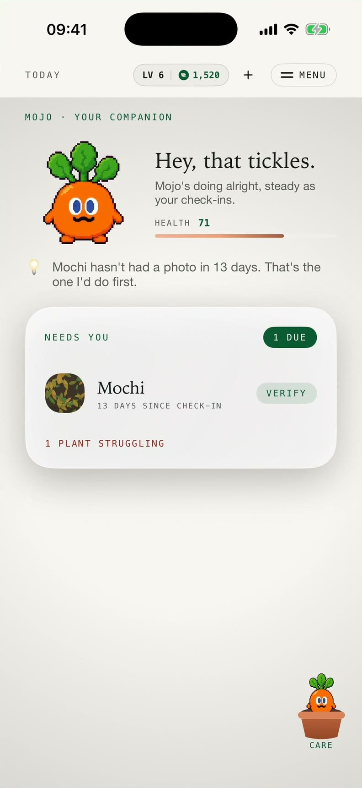
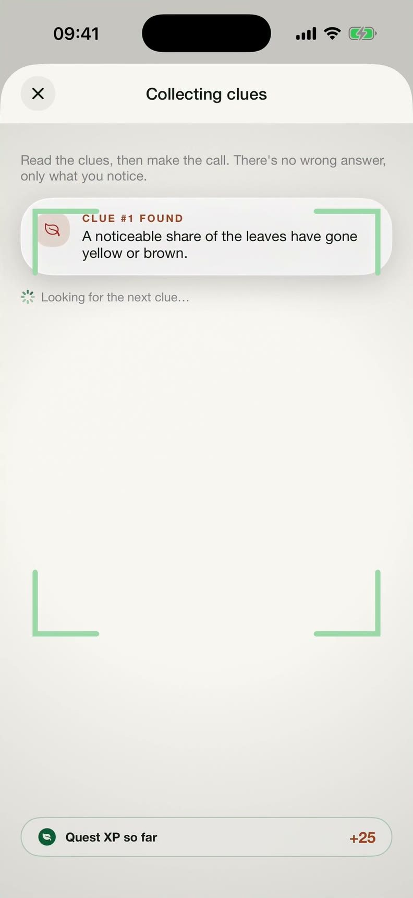
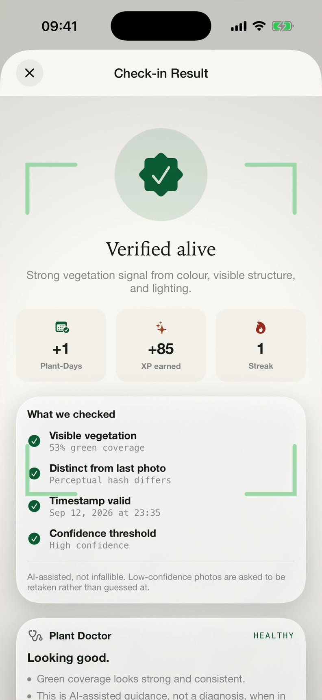
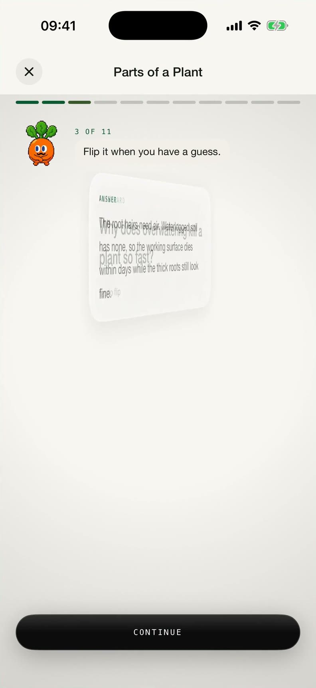
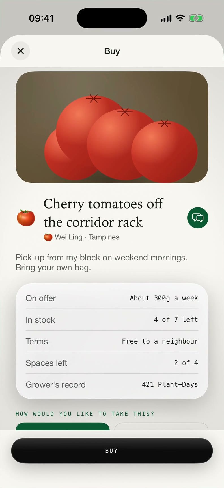
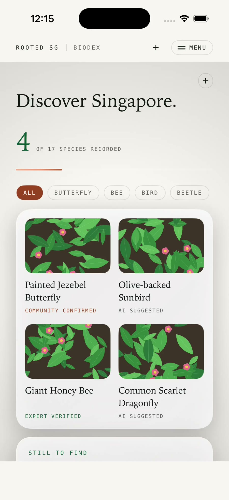
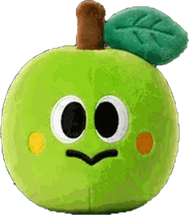

01 Morning
MojoPandan needs you first
Mojo tells you who needs you.
A gentle nudge before a plant is lost, not a guilt trip after.
Rooted SG counts one thing: the verified Plant-Day. Every screen here is from the real build.







Verified Plant-Days. It only grows while your plants stay alive.
A gentle nudge, a quick check-in, and a reaction that makes you want to come back.
A human stays in the loop, and the fix becomes a step-by-step plan.
Then the day counts. No real plant, no Plant-Day.
Learning by doing, with Mojo reacting to every answer.
Every listing shows the grower's record, like 421 Plant-Days.
Labelled "AI suggested" until someone confirms it.
A gentle nudge before a plant is lost, not a guilt trip after.
A real plant, a fresh photo, a valid time. No real plant, no Plant-Day.
A human stays in the loop, and the fix becomes a step-by-step plan.
The Guardian Path teaches by doing, with Mojo reacting to every answer.
Every listing carries the grower's record, so you know who to ask.
Once a day, timed to the weather. Never twice.
A photo, and the app checks it quietly in the background.
A small, visible win that makes you want to come back.
If a photo is unclear, or something looks wrong, the app stops and asks for a retake, instead of accepting bad data. Verified, not self-reported.
Colour, fullness and light become clues.
"A noticeable share of the leaves has gone yellow or brown."
There's no wrong answer, only what you notice.
The next check-in shows whether the fix worked.

ROOTED SGOne app. One number that matters.Processed on the phone, at zero marginal cost per photo.
Low-confidence results ask for a retake.
Off by default. Only a resized photo is sent.
Neighbourhoods only, never exact locations.
AI supports Rooted SG, but it isn't the whole product. It checks photos, powers the Plant Doctor, suggests species, and answers questions as Mojo.
iPhone and Android do the same thing the same way. 43 iOS and 46 Android automated tests keep them level.
Each photo is checked for living plant cover and compared with the last one, so an old or repeated photo cannot earn a day.
Low-confidence results ask for a retake. Species suggestions stay labelled until someone confirms them.
Cloud AI is off by default. Only a resized photo is ever sent. Locations stay at neighbourhood level. 70 backend tests pass.
The 100,000-run forecast above is a Python script in the repository. Survey results carry confidence intervals, and the survival rate comes with a Wilson interval.
Review mode: amber rows are drafts waiting to be confirmed by the team. Add or remove ?review in the address to hide or show them.
A nudge between lectures and a ten-second photo keep a single pothos going. The record grows even in a busy week.
Everyone at home can look after the same plants, and every verified day goes on the plant's record.
Plant care already lives in their hands. A clear check-in and a friendly companion keep the habit simple.
Teachers can see living plants add up across a class, instead of guessing which ones survived the holidays.
Two native apps at feature parity, on the same data model: verified Plant-Days, Mojo and the AI Plant Doctor, verified check-ins, lessons and the Roots marketplace.